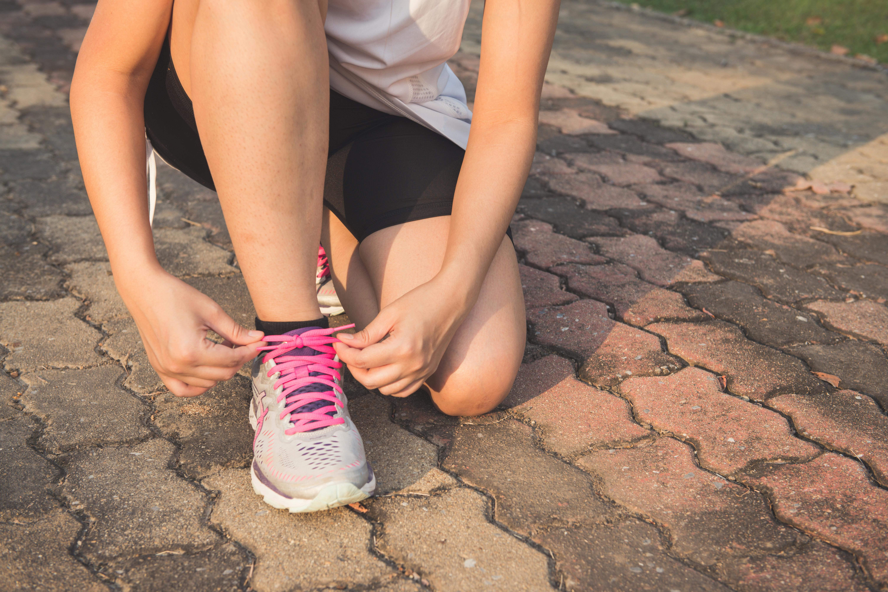

Snelle service
De wachttijden houden we zo kort mogelijk. Uw driedimensionaal vervaardigde zolen kunnen we zelfs dezelfde dag leveren.

Informatie
Podotherapie wordt vergoed vanuit het aanvullend pakket — de behandeling gaat niet ten koste van uw eigen risico.
Vergoedingen
Podotherapie wordt door de meeste verzekeraars vergoed in een aanvullend pakket. Kijk voor een overzicht van de vergoedingen per verzekeraar op de website van onze beroepsvereniging www.podotherapie.nl.
Voor diabetici gelden soms aparte vergoedingen. Meer informatie vindt u op www.diabetespodotherapeut.nl.
Bij twijfel kunt u contact opnemen met uw verzekeraar of de podotherapeut.
Maak een afspraakOverzicht
Voordelen
Bij Voetselect Podotherapie bent u aan het juiste adres voor deskundig advies bij uw voetklachten. Wij zijn al meer dan 25 jaar specialist in podotherapie.
De wachttijden houden we zo kort mogelijk. Uw driedimensionaal vervaardigde zolen kunnen we zelfs dezelfde dag leveren.
Wij beschikken over een geavanceerd insole drukmeetsysteem waarbij gemeten wordt in uw eigen schoenen. Zo leggen we iedere beweging vast.
Van uw eigen steunzool maken wij prachtige maatslippers. Stijlvol en therapeutisch — precies op maat voor uw voet.
Indicaties
Onze podotherapeuten staan voor u klaar. Neem contact op of maak direct een afspraak via telefoon of e-mail.
Maak een afspraak